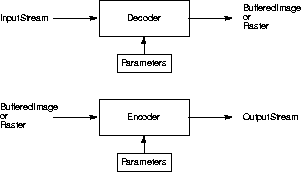

Programming in Java Advanced Imaging
Programming in Java Advanced Imaging
C H A P T E R 11 11 |
|
Image Data Compression |
This chapter describes the Java Advanced Imaging image data compression coders and decoders (codecs).
11.1
TheIntroduction
javax.media.jai.codecpackage provides a set of interfaces and classes for encoding and decoding compressed image data files. Java Advanced Imaging currently supports the following codecs:
The
javax.media.jai.codecpackage also enables you to create your own additional codecs if those listed above are not sufficient. See Chapter 12, "Extending the API," for more information.The Java Advanced Imaging codecs are used to both read (decode) and write (encode) compressed images. Decode operations convert compressed image data back into the uncompressed form. Encode operations convert original image data into a compressed data form. These are often called image coding operations, because they use data coding methods to make the conversion to and from the compressed form.
As shown in Figure 11-1, the image decode operations transform an
InputStreaminto aBufferedImageorRasterobject. The image encode operations transform aBufferedImageorRasterinto anOutputStream. Various parameters affect the encode and decode operations. These parameters are usually different for each codec, but include such things as the bit depth, choice of conversion tables, and factors that affect image quality and compression ratio.
Figure 11-1
Java Advanced Imaging Decode and Encode Operations
If you need to know more about image data compression than is presented here, see "Related Documentation" in the Preface.
11.2
The following tables list the interfaces and classes used for image data compression and decompression. These interfaces and classes are all part of thejavax.media.jai.codecpackage.
11.3
The encoding operation is usually performed at the sink end of a rendering graph or chain, after any other operations have been performed and the image is converted into aRenderedImageor aRaster. At this point, the image is ready to be written to a file in one of the supported compressed image data formats.The encoding of an image file into a supported image format is done with one of the
ImageCodec.createImageEncodermethods. To encode a compressed image file, you:1. Create a
RasterorRenderedImageobject for the input file and specify a file name.
RenderedImage im; String filename;2. Create a
FileOutputStreamobject and give it the file name defined in the previous step. TheFileOutputStreamprovides an output stream attached to a disk file. Include the name of the file in the constructor:
FileOutputStream dst = new FileOutputStream(filename)3. Create an image encoder with the
ImageCodec.createImageEncodermethod.
ImageEncoder enc = ImageCodec.createImageEncoder("codec", dst, null);
- The
"codec"parameter specifies the name of the codec to be used ("BMP","JPEG","PNG", or"PNM"). Thedstparameter specifies theOutputStreamto write to.4. Encode the image with the
ImageEncoder.encodemethod.
enc.encode(im);5. Close the output stream with the
closemethod. This frees up operating system resources and flushes the output stream.
dst.close();The following sample code is an example of encoding a BMP file.
Listing 11-1
ImageCodec.createImageEncoder("BMP", dst, null);
API:javax.media.jai.codec.ImageCodec
- static ImageEncoder createImageEncoder(java.lang.String name, java.io.OutputStream dst, ImageEncodeParam param)
- returns an
ImageEncoderobject suitable for encoding to the suppliedOutputStream, using the suppliedImageEncodeParamobject.
Parameters: nameThe name associated with the codec ( "BMP","JPEG", or"PNM").
dstThe OutputStreamto write to.
paramAn instance of ImageEncodeParamsuitable for use with the named codec, or null.
- static ImageEncoder createImageEncoder(java.lang.String name, java.io.OutputStream dst)
- Returns an
ImageEncoderobject suitable for encoding to the suppliedOutputStreamobject. A nullImageEncoderParamis used.
API:javax.media.jai.codec.ImageEncoder
- void encode(java.awt.image.Raster ras)
- encodes a
Rasterand writes the output to theOutputStreamassociated with thisImageEncoder.
- void encode(java.awt.image.RenderedImage im)
- encodes a
RenderedImageand writes the output to theOutputStreamassociated with thisImageEncoder.11.4
The decoding operation is usually performed at the source end of a rendering graph or chain, before any other operations have been performed.The decoding of any of the supported image formats is done with one of the
ImageCodec.createImageDecodermethods. To decode a compressed image file, you:1. Create a
The following sample code is an example of decoding a JPEG file.RasterorRenderedImageobject for the output file and specify a file name.2. Create a
FileInputStreamobject and give it the file name defined in the previous step.3. Create an image decoder with the
ImageCodec.createImageDecodermethod.4. Decode the image. Use the
ImageEncoder.decodeAsRastermethod to generate a Raster, or theImageEncoder.decodeAsRenderedImagemethod to generate aRenderedImage.5. Close the image.
Listing 11-2
ImageCodec.createImageDecoder("JPEG", dst, null);
API:javax.media.jai.codec.ImageCodec
- static ImageDecoder createImageDecoder(java.lang.String name, java.io.InputStream src, ImageDecodeParam param)
- returns an
ImageDecoderobject suitable for decoding from the suppliedInputStream, using the suppliedImageDecodeParamobject.
Parameters: nameThe name associated with the codec ( "BMP","JPEG", or"PNM").
srcThe InputStreamto read from.
paramAn instance of ImageEncodeParamsuitable for use with the named codec, or null.
- static ImageDecoder createImageDecoder(java.lang.String name, java.io.InputStream src)
- returns an
ImageDecoderobject suitable for decoding from the suppliedInputStream. A nullImageDecodeParamis used.
API:javax.media.jai.codec.ImageDecoder
- java.awt.image.Raster decodeAsRaster()
- returns a
Rasterthat contains the decoded contents of theInputStreamassociated with thisImageDecoder.
- java.awt.image.RenderedImage decodeAsRenderedImage()
- returns a
RenderedImagethat contains the decoded contents of theInputStreamassociated with thisImageDecoder.11.5
Several standardized image compression techniques have evolved to support the requirements of different segments of the imaging industry. Java Advanced Imaging supports a small number of these standards. Due to the great variety of standards available, it is not possible for any imaging API to support them all. However, Java Advanced Imaging makes it possible to add any number of image coders and decoders to support special needs. See Chapter 12, "Extending the API," for more information.
11.5.1
The BMP (Microsoft Windows bitmap image file) file format is a commonly-used file format on IBM PC-compatible computers. BMP files can also refer to the OS/2 bitmap format, which is a strict superset of the Windows format. The OS/2 2.0 format allows for multiple bitmaps in the same file, for the CCITT G3 1bpp encoding, and also a RLE24 encoding.Java Advanced Imaging currently reads and writes Version2, Version3, and some of the Version 4 images, as defined in the Microsoft Windows BMP file format.
Version 4 of the BMP format allows for the specification of alpha values, gamma values, and CIE color spaces. These are not currently handled, but the relevant properties are emitted, if they are available from the BMP image file.
Versions 3 and later support run-length encoded (RLE) formats for compressing bitmaps that use four or eight bits per pixel.
BMP files are stored in a device-independent bitmap (DIB) format that allows the bitmap to be displayed on any type of display device. The format specifies pixel color in a form independent of the method used by a display to represent color.
The BMP file contains the following:
- Bitmap-file header - describes the type, size, and layout of the bitmap file.
- Bitmap-information header - specifies the dimensions, compressed type, and color format for the bitmap.
- Color table - an array of RGB quad structures that describe a color consisting of relative intensities of red, green, and blue. The array contains as many elements as there are colors in the bitmap. There is no color table for bitmaps with 24 color bits since each pixel is represented by 24-bit red-green-blue (RGB) values in the actual bitmap data area.
The bit count information in the bitmap-information header determines the number of bits that define each pixel and the maximum number of colors in the bitmap. The bit count information can have any of the following values:
- Bitmap data - an array of bytes that defines the bitmap bits. The bytes represent consecutive rows (or scan lines) of the bitmap. Each scan line consists of consecutive bytes representing the pixels in the scan line, in left-to-right order. The number of bytes representing a scan line depends on the color format and the width, in pixels, of the bitmap.
11.5.1.1
Java Advanced Imaging provides four parameters for defining BMP coding: version, compression type, data layout, and the number of bits per pixel.
11.5.1.2
Java Advanced Imaging currently reads and writes Version2, Version3, and some of the Version 4 images. The BMP version number is read and specified withgetVersionandsetVersionmethods in theBMPEncodeParamclass. The BMP version parameters are as follows:
Parameter Description VERSION_2 Specifies BMP Version 2 VERSION_3 Specifies BMP Version 3 VERSION_4 Specifies BMP Version 4 If not specifically set,
VERSION_3is the default version.
API:javax.media.jai.codec.BMPEncodeParam
- int getVersion()
- returns the BMP version to be used.
- void setVersion(int versionNumber)
- sets the BMP version to be used.
11.5.1.3
The BMP compression type is read and specified withgetCompressionandsetCompressionmethods in theBMPEncodeParamclass. Java Advanced Imaging currently supports four compression types:
If not specifically set,
BI_RGBis the default type (no compression).
API:javax.media.jai.codec.BMPEncodeParam
- int getCompression()
- returns the compression type to be used.
- void setCompression(int compressionType)
- sets the compression type to be used.
11.5.1.4
The scan lines in the BPM bitmap are stored from the bottom up. This means that the first byte in the array represents the pixels in the lower-left corner of the bitmap, and the last byte represents the pixels in the upper-right corner.The BMP bitmap data layout is read and specified with
getDataLayoutandsetDataLayoutmethods in theBMPEncodeParamclass. The data layout is one of the following:
Parameter Description TOP_DOWN The constant for top-down layout BOTTOM_UP The constant for bottom-up layout
API:javax.media.jai.codec.BMPEncodeParam
- int getDataLayout()
- returns the data layout to be used.
- void setDataLayout(int dataLayout)
- sets the data layout to be used.
11.5.1.5
The number of bits per pixel is specified withgetBitsPerPixelandsetBitsPerPixelmethods in theBMPEncodeParamclass. Valid values are 1, 4, 8, and 24. Support for 16- and 32-bit images has also been implemented in Java Advanced imaging, though such BMP images are not very common.
API:javax.media.jai.codec.BMPEncodeParam
- int getBitsPerPixel()
- returns the bit depth to be used.
- void setBitsPerPixel(int bitsPerPixel)
- sets the bit depth to be used.
11.5.2
The FlashPix standard was developed by the Digital Imaging Group (DIG), a not-for-profit consortium of several companies whose purpose is to grow the marketplace for digital imaging solutions through the promotion and ongoing development of open standards. FlashPix is a multi-resolution, tiled file format that allows images to be stored at different resolutions for different purposes, such as editing or printing. Each resolution is divided into 64 x 64 blocks, or tiles. Within a tile, pixels can be either uncompressed, JPEG compressed or single-color compressed.Flashpix objects are stored in structured storage container files. The image data is stored in defined color spaces. By defining the color space options and providing standard ICC color management profiles, colors remain consistent when viewed across various displays and printers.
FlashPix viewing parameters include area selection, a filtering parameter, a spatial orientation matrix, a colortwist matrix, and a contrast parameter. FlashPix images also includes non-image data definitions, including information such as content description, camera information, and scan description.
The FlashPix file format is designed to work with the Internet Imaging Protocol (IIP). IIP takes a Flashpix object and transports it over a network using a request-response protocol. For example, a command such as "TIL" requests a single tile or ranges of tiles that include coding information. IIP improves the efficiency of transporting Flashpix image files over the Internet by transferring just the data needed. This eliminates the need to create and store multiple files on a server, since one file contains both low and high resolutions - the IIP server delivers the correct resolution needed for the application.
The image information is transferred over the Internet via CGI or server modules. A user then makes a connection through TCP/ IP sockets and IIP does the rest. If a problem should occur, IIP returns an error message.
11.5.3
The JPEG standard was developed by a working group, known as the Joint Photographic Experts Group (JPEG). The JPEG image data compression standard handles grayscale and color images of varying resolution and size.JPEG compression identifies and discards "extra" data that is beyond what the human eye can see. Since it discards data, the JPEG compression algorithm is considered "lossy." This means that once an image has been compressed and then decompressed, it will not be identical to the original image. In most cases, the difference between the original and compressed version of the image is indistinguishable.
An advantage of JPEG compression is the ability to select the quality when compressing the image. The lower the quality, the smaller the image file size, but the more different it will appear than the original.
The JPEG File Interchange Format (JFIF) is a minimal file format that enables JPEG bitstreams to be exchanged between a wide variety of platforms and applications. This minimal format does not include any of the advanced features found in the TIFF JPEG specification or any application-specific file format. The sole purpose of this simplified format is to allow the exchange of JPEG compressed images.
The JFIF features are:
- Uses the JPEG baseline image compression algorithm
- Uses JPEG interchange format compressed image representation
- Compatible with most platforms (PC, Mac, or Unix)
- Standard color space: one or three components. For three components, YCbCr (CCIR 601-256 levels)
The APP0 marker is used to identify a JFIF file. The marker provides information that is missing from the JPEG stream, such as version number, x and y pixel density (dots per inch or dots per cm.), pixel aspect ratio (derived from x and y pixel density), and thumbnail.
- APP0 marker used to specify Units, x pixel density, y pixel density, and thumbnail. The APP0 marker may also be used to specify JFIF extensions and application-specific information
11.5.3.1
Java Advanced Imaging uses the JPEG baseline DCT coding process, shown in Figure 11-2.

Figure 11-2
For encoding, the image array is divided into 8 x 8 pixel blocks and a discrete cosine transform (DCT) is taken of each block, resulting in an 8 x 8array of transform coefficients. The DCT is a mathematical operation that takes the block of image samples as its input and converts the information from the spatial domain to the frequency domain. The 8 x 8 matrix input to the DCT represents brightness levels at specific x, y coordinates. The resulting 8 x 8 matrix values represent relative amounts of 64 spatial frequencies that make up the spectrum of the input data.
The next stage in the encoder quantizes the transform coefficients by dividing each DCT coefficient by a value from a quantization table. The quantization operation discards the smaller-valued frequency components, leaving only the larger-valued components.
After an image block has been quantized, it enters the entropy encoder, which creates the actual JPEG bitstream. The entropy encoder assigns a binary Huffman code to coefficient values. The length of each code is chosen to be inversely proportional to the expected probability of occurrence of a coefficient amplitude - frequently-occurring coefficient values get short code words, seldom-occurring coefficient values get long code words. The entropy encoder uses two tables, one for the AC frequency components and one for the DC frequency components.
The JPEG decoding process is essentially the inverse of the encoding process. The compressed image array data stream passes through the entropy encoder, which recreates the quantized coefficient values. Then, the quantized coefficients are reconstructed by multiplication with the quantizer table values. Finally, an inverse DCT is performed and the reconstructed image array is produced.
11.5.3.2
The following are the parameters that may be specified for JPEG DCT compression.
Quantization Table
ThesetQTableandgetQTablemethods are used to specify and retrieve the quantization table that will be used in encoding a particular band of the image. There are, by default, two quantizer tables:
Table Band 0 Band 0 1 All other bands The parameter
tableNumis usually a value between 0 and 3. This value indicates which of four quantization tables you are specifying. Table 0 is designed to be used with the luminance band of eight-bit YCC images. Table 1 is designed to be used with the chrominance bands of eight-bit YCC images. Tables 2 and 3 are not normally used.
API:javax.media.jai.codec.JPEGEncodeParam
- void setQTable(int tableNum, com.sun.image.codec.jpeg.JPEGQTable qTable)
- com.sun.image.codec.jpeg.JPEGQTable getQTable(int tableNum)
- void setQTableComponentMapping(int component, int table)
- com.sun.image.codec.jpeg.JPEGQTable getQTableForComponent(int component)
- int getQTableComponentMapping(int component)
AC Huffman Table
Parameters enable you to associate a particular AC Huffman table with a particular band of the image. The JPEG compressor supports four tables for the AC discrete cosine transform coefficients, as listed in Table 11-3.
API:javax.media.jai.codec.JPEGEncodeParam
- void setACHuffmanTable(int tableNum, com.sun.image.codec.jpeg.JPEGHuffmanTable huffTable)
- com.sun.image.codec.jpeg.JPEGHuffmanTable getACHuffmanTable(int tableNum)
- void setACHuffmanComponentMapping(int component, int table)
- int getACHuffmanComponentMapping(int component)
DC Huffman Table
Parameters enable you to associate a particular DC Huffman table with a particular band of the image. The JPEG compressor supports four tables for the DC discrete cosine transform coefficients, as listed in Table 11-4.
API:javax.media.jai.codec.JPEGEncodeParam
- void setDCHuffmanTable(int tableNum, com.sun.image.codec.jpeg.JPEGHuffmanTable huffTable)
- void setDCHuffmanComponentMapping(int component, int table)
- com.sun.image.codec.jpeg.JPEGHuffmanTable getDCHuffmanTable(int tableNum)
- com.sun.image.codec.jpeg.JPEGHuffmanTable getDCHuffmanTableForComponent(int component)
- int getDCHuffmanComponentMapping(int component)
Horizontal and Vertical Subsampling
To ensure proper image post-processing and accurate image presentation of JFIF files requires the specification of the spatial positioning of pixel samples within components relative to the samples of other components. This is known as subsampling.In JFIF files, the position of the pixels in subsampled components are defined with respect to the highest resolution component. Since components must be sampled orthogonally (along rows and columns), the spatial position of the samples in a given subsampled component may be determined by specifying the horizontal and vertical offsets of the first sample, i.e., the sample in the upper left corner, with respect to the highest resolution component.
The horizontal and vertical offsets of the first sample in a subsampled component, Xoffseti[0,0] and Yoffseti[0,0], is defined to be:
Proper subsampling of components incorporates an antialiasing filter that reduces the spectral bandwidth of the full resolution components. Subsampling can easily be accomplished using a symmetrical digital filter with an even number of taps (coefficients). A commonly used filter for 2:1 subsampling uses two taps (1/2, 1/2).
- Xoffseti[0,0] = (Nsamplesref / Nsamplesi) / 2 - 0.5
Yoffseti[0,0] = (Nlinesref / Nlinesi) / 2 - 0.5
- Nsamplesref is the number of samples per line in the largest component
Nsamplesi is the number of samples per line in the ith component
Nlinesref is the number of lines in the largest component
Nlinesi is the number of lines in the ith component
API:javax.media.jai.codec.JPEGEncodeParam
- void setHorizontalSubsampling(int component, int subsample)
- sets the horizontal subsampling value (number of samples per line).
- void setVerticalSubsampling(int component, int subsample)
- sets the vertical subsampling value (number of lines).
- int getHorizontalSubsampling(int component)
- returns the horizontal subsampling value.
- int getVerticalSubsampling(int component)
- returns the vertical subsampling value.
Marker Data
The JPEG APP0 marker is used to specify units, x pixel density, y pixel density, and thumbnail. The APP0 marker may also be used to specify JFIF extensions and application-specific information. The APP0 marker syntax is defined in Annex B of ISO DIS 10918-1. In addition, a JFIF file uses APP0 marker segments and constrains certain parameters in the frame header as defined below.
X'FF', SOIX'FF', APP0, length, identifier, version, units, XDensity,Table 11-5 describes the marker parameters.
YDensity, Xthumbnail, Ythumbnail, (RGB)n
API:javax.media.jai.codec.JPEGEncodeParam
- void setMarkerData(int marker, byte[][] data)
- sets the marker data.
- void addMarkerData(int marker, byte[] data)
- adds data to the marker.
- boolean getMarker(int marker)
- returns a marker.
- byte[][] getMarkerData(int marker)
- returns marker data.
Density
You can set density parameters, such as the units (inches or centimeters) for the pixel densities and the number of bytes per pixel for both the horizontal and vertical dimensions.The
setDensityUnitmethod sets the unit of measure for the x and y values. The following values are legal for thesetDensityUnitmethod:
Value Meaning 0 No units. x and y specify the pixel aspect ratio 1 x and y are dots per inch 2 x and y are dots per cm. The
setXDensityandsetYDensitymethods set the horizontal and vertical pixel density, respectively.To specify a pixel aspect ratio, use the
setDensityUnitmethod with a value of 0 (no units) and setXDensityandYDensityfor the desired aspect ratio. For example, setXDensity= 1 andYDensity= 1 to specify a 1:1 aspect ratio. The values forXDensityandYDensityshould always be non-zero.
API:javax.media.jai.codec.JPEGEncodeParam
- void setDensityUnit(int unit)
- sets the unit of measure for the x and y values.
- void setXDensity(int density)
- sets the horizontal pixel density.
- void setYDensity(int density)
- sets the vertical pixel density.
- int getDensityUnit()
- returns the unit-of-measure setting.
- int getXDensity()
- returns the horizontal pixel density.
- int getYDensity()
- returns the vertical pixel density.
Compression Quality
Compression quality specifies a factor that relates to the desired tradeoff between image quality and the image data compression ratio. The quality value is a float between 1 and 100. A setting of 100 produces the highest quality image at a lower compression ratio. A setting of 1 produces the highest compression ratio, with a sacrifice to image quality. The quality value is typically set to 50.The compression quality value controls image quality and compression ratio by determining a scale factor the encoder will use in creating scaled versions of the quantization tables. A quality value of 50 defines a scaling factor of 1, which means that the scaled quantization tables are identical to the original tables. A quality value of less than 1 produces a scaling factor greater than 1 and a quality value greater than 1 produces a scaling factor less than 1.
Note: The values stored in the quantization table also affect image quality and compression ratio. See also "Quantization Table."
API:javax.media.jai.codec.JPEGEncodeParam
- void setQuality(float quality, boolean forceBaseline)
What does forceBaseline do - set to the baseline process?
- sets the compression quality factor.
Miscellaneous
These methods don't currently have a home. I'm not sure what to do with them.
API:javax.media.jai.codec.JPEGEncodeParam
- void setImageInfoValid(boolean flag)
- void setTableInfoValid(boolean flag)
- void setRestartInterval(int restartInterval)
- int getWidth()
- int getHeight()
- boolean isImageInfoValid()
- boolean isTableInfoValid()
- int getEncodedColorID()
- int getNumComponents()
- int getRestartInterval()
11.5.4
The PNG (Portable Network Graphics) is an extensible file format for the lossless, portable, compressed storage of raster images. PNG was developed as a patent-free alternative to GIF and can also replace many common uses of TIFF. Indexed-color, grayscale, and truecolor images are supported, plus an optional alpha channel. Sample depths range from 1 to 16 bits.
11.5.4.1
Table 11-6 lists the PNG hints.
Table 11-6 Hint Key Class Default Value KEY_PNG_EMIT_ALPHA Boolean Boolean.FALSE KEY_PNG_EMIT_16BITS Boolean Boolean.FALSE KEY_PNG_EMIT_SQUARE_PIXELS Boolean Boolean.FALSE PNG images stored with a bit depth of 16 are truncated to eight bits of output unless the
KEY_PNG_EMIT_16BITShint is set toBoolean.TRUE. Similarly, the output image will not have an alpha channel unless theKEY_PNG_EMIT_ALPHAhint is set.Normally no correction is made for images with non-square pixels. To automatically perform a simple scale to correct for such distortion, use the
KEY_PNG_EMIT_SQUARE_PIXELShint. The correct aspect ratio may be retrieved by means of thepixel_aspect_ratioproperty.Will there be a PNGEncodeParam class?
11.5.5
The PNM format is one of the extensions of the PBM file format (PBM, PGM, and PPM). The portable bitmap format is a lowest-common-denominator monochrome file format. It was originally designed to make it reasonable to mail bitmaps between different types of machines. It now serves as the common language of a large family of bitmap conversion filters.The PNM fotmat comes in six variants:
- PBM ASCII - three-banded images
- PBM raw - three-banded images
- PGM ASCII - single-banded images
- PGM raw - single-banded images
- PPM ASCII - single-banded images
- PPM raw - single-banded images
API:javax.media.jai.codec.PNMEncodeParam
- void setRaw(boolean raw)
- sets the RAWBITS option flag.
- boolean getRaw()
- retrieves the RAWBITS option flag.
11.5.6
Note: TIFF image compression and decompression is not yet implemented.A TIFF image file consists of several entries, each of which has a tag and some associated data. The tag indicates the purpose of the associated data. The tags and data define the image's format, size, and other parameters, including the image data itself.
As shown in Figure 11-3, a TIFF image file is divided into a header, one or more Image File Directories (IFD), IFD entries, and data.
The file header consists of eight bytes of data, containing the following information:
- Byte-order indicator - two bytes that specify whether the image data is ordered by least-significant byte first as used in Intel processors), or most-significant byte first (as used in Sun SPARC and Motorola processors). The indicator is
IIfor Intel platforms,MMfor Sun SPARC and Motorola processors. The byte-order indicator is what makes the image file portable between platforms.
- Version number - two bytes that indicate the TIFF version number (not to be confused with the revision number, which changes with each release of the TIFF standard).
- IFD address - four bytes that specify the address of the first IFD relative to the beginning of the file. A TIFF image file generally includes a single IFD, but may contain more.

Figure 11-3
The Image file directory contains the following:
- Number of entries - two bytes that indicate the number of entries in the IFD.
- Directory entries - one or more IFD entries, which consist of the following:
- Tag number - a tag that indicates the meaning of the following data. The Java Advanced Imaging TIFF reader reads all the tags listed in Table 11-7.
- Field type - defines the type of data. Java Advanced Imaging supports all 12 of the TIFF 6.0 standard data types listed in Table 11-8.
- Field length - four bytes that indicate the number of data items in the field data.
- Data address - four bytes that contain the address of the entry field data, relative to the start of the file.
11.5.6.1
The tags listed in Table 11-7 define the parameters and data of the image stored in the TIFF file. TheTIFF_ImageWidth,TIFF_ImageLength, andTIFF_BitsPerSampletags define the number of pixels in the image, the number of lines, and the pixel depth, respectively. TheTIFF_Compressiontag defines the data compression algorithm used to store the image, such as run-length coding, Lempel-Ziv-Welch (LZW), or JPEG.
The
TIFF_PhotometricInterpretationtag defines the image type. For example, for a bilevel or grayscale image, whether the image is quantized with black = 0 or with white = 0. For color images, this tag identifies the image as RGB full color, palette color, or transparency mask.TIFF extensions, such as GeoTIFF (see the GeoTIFF Web Page at
http://home.earthlink.net/~ritter/geotiff/geotiff.html), operate by defining additional private tags, usually referenced by a small number of globally-registered TIFF tags. Java Advanced Imaging allows such tags to be decoded into first-class tags by adding suitablePropertyGeneratorobjects.
11.5.6.2
Java Advanced Imaging supports all of the TIFF 6.0 standard data types listed in Table 11-8.
11.6
Transform coding is a form of lossy block coding that transforms blocks of the image from the spatial domain to the frequency domain. The fundamental frequency component values of the frequency domain image are the codes that are stored as the compressed image.Java Advanced Imaging supports a form of transform coding known as the discrete cosine transform (DCT). The DCT is one of several frequency transforms that may be used in transform image compression. One of the things that makes DCT unique is that it works well for a wide range of arbitrary image types. It produces the fewest number of frequency components and, thus, the smallest compressed image file size.
The DCT is similar to the discrete Fourier transform (see Section 6.6.1, "Discrete Fourier Transform"). However, the DCT is better at compactly representing very small images. The drawback is that the DCT requires more computational power than the discrete Fourier transform.
The DCT operation breaks the source image into pixel blocks of 8 x 8 pixels. The discrete cosine transform then is performed on each block, transforming each block into frequency-domain representation. Minimally-valued frequency components are discarded, leaving only those components that contribute significantly to the image. The DCT image compression causes some image degradation that increases proportionally with increased compression ratios. Typically, DCT provides a compression ratio of 10:1 without serious image quality degradation.
Like the discrete Fourier transform (DFT), the DCT also has an inverse operation, the inverse discrete cosine transform (IDCT).
11.6.1
TheDCToperation computes the even discrete cosine transform of an image. Each band of the destination image is derived by performing a two-dimensional DCT on the corresponding band of the source image.The
DCToperation does not take any parameters.
API:javax.media.jai.JAI
- static RenderedOp create("dct", RenderedImage im)
- creates a
RenderedOpas a result of performing aDCToperation on the specified image.
- static RenderableOp createRenderable("dct",
ParameterBlock paramBlock, RenderingHints hints)
- creates a
RenderableImageas the result of applying theDCToperation to a tuple (source, parameters, hints).11.6.2
TheIDCToperation computes the inverse even discrete cosine transform of an image. Each band of the destination image is derived by performing a two-dimensional inverse DCT on the corresponding band of the source image.The
IDCToperation does not take any parameters.
API:javax.media.jai.JAI
- static RenderedOp create("idct", RenderedImage im)
- creates a
RenderedOpas a result of performing aIDCToperation on the specified image.
- static RenderableOp createRenderable("idct",
ParameterBlock paramBlock, RenderingHints hints)
- creates a
RenderableImageas the result of applying theIDCToperation to a tuple (source, parameters, hints).
Programming in Java Advanced Imaging
Copyright © 1999, Sun Microsystems, Inc. All rights reserved.